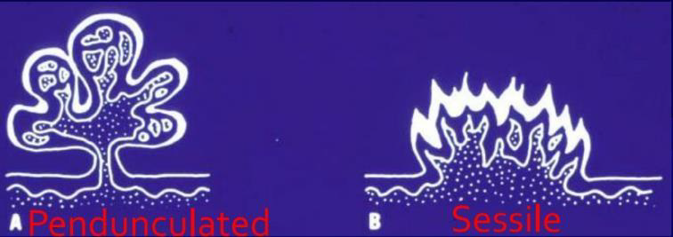
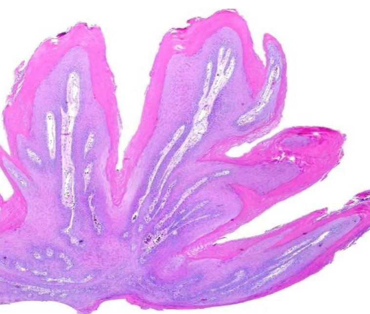
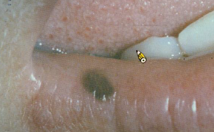
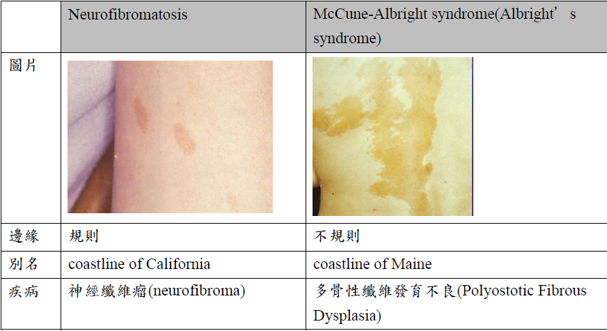
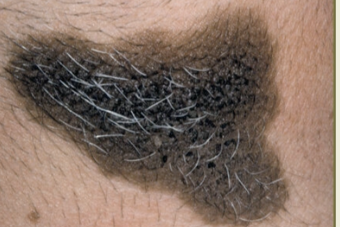
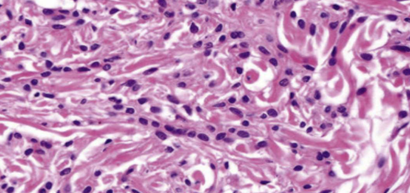
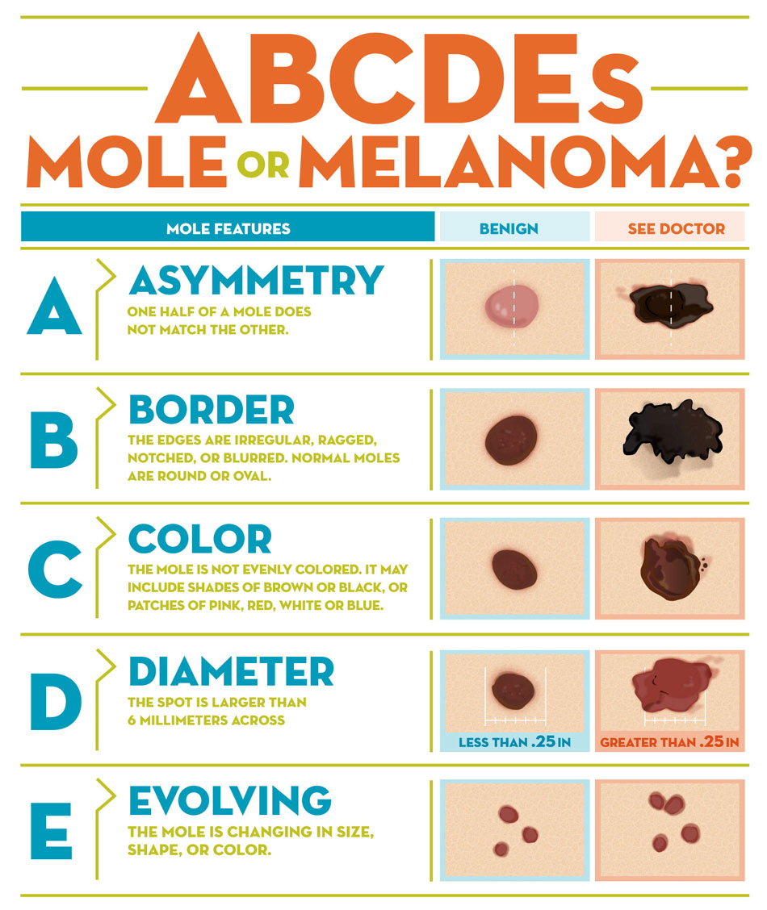
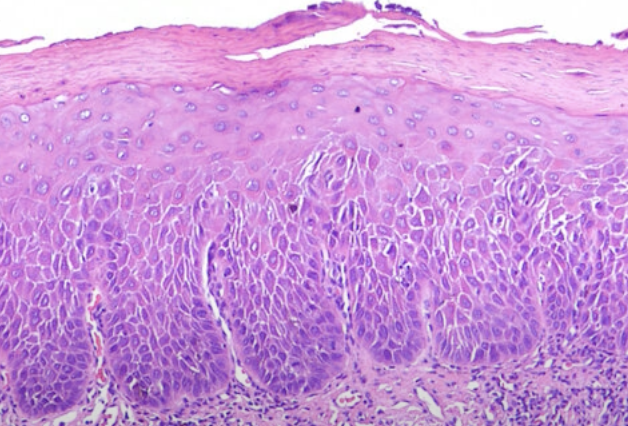
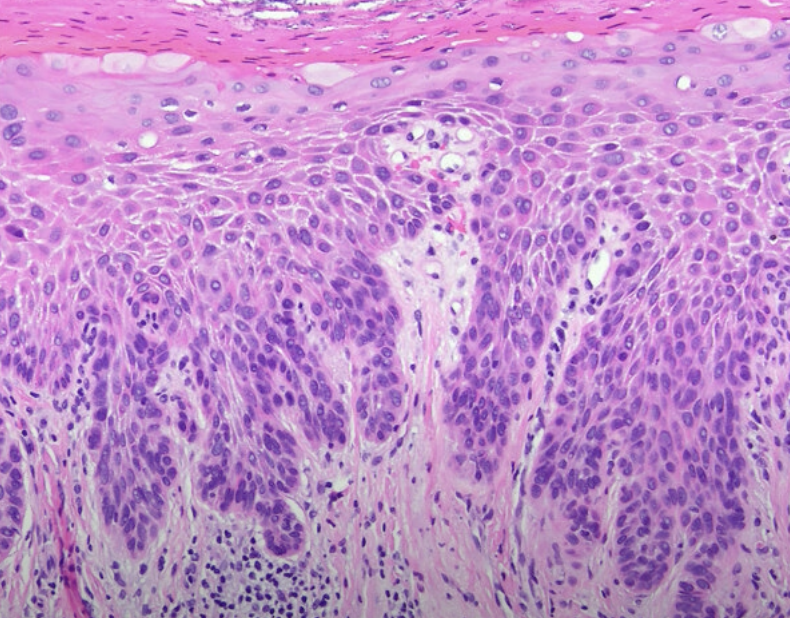
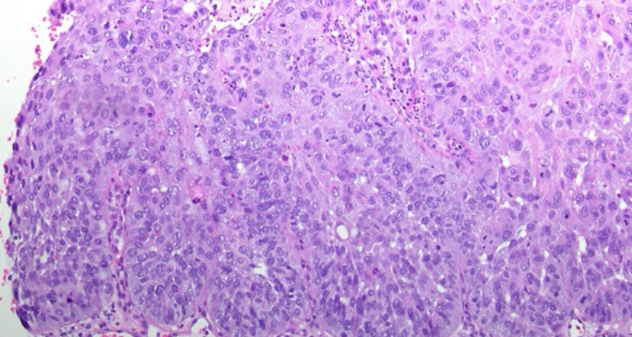

Epithelial tumors
HPV
| Low-risk | High-risk |
|---|---|
| 良 | 惡 |
| episomal form | integrated form |
- E6 → p53, E7 → RB
episomal v.s. integrated form

| 變異名稱 | 風險/ 原因 | 位置 | 症狀、特徵 | |||
|---|---|---|---|---|---|---|
| papilloma (6, 11) |
30~50y | 軟顎、口腔常見 | 單發、低傳染 | |||
| pedunculated, sessile(少)  | ||||||
| stratified squamous epi. 包結締組織 hyperparakeratosis (有核、顆粒層缺失)  |
||||||
| Verruca vulgaris 尋常疣 (2, 4) |
- | 皮膚、口腔(少見、接觸、自傳染) | 大多是sessile(無梗) | |||
 |
||||||
| 小孩身上有機會自行痊癒，治療需要 basal layer 清乾淨 | ||||||
| Condyloma acuminatum 尖銳濕疣 |
- |
|
多顆、界線清楚、無痛、兒童有機會自愈 | |||
廣底、papillary 突起不明顯、Koilocytes (空亮、葡萄乾核)  |
||||||
| Multifocal epithelial hyperplasia (Heck’s disease， 13, 32) |
低社經、HIV | 唇、頰、舌 | 小、軟、多、無痛 | |||
Papillomatous variant
 |
Papulonodular
 |
|||||
  |
||||||
| Verruciform xanthoma (非 HPV) | Leasion 旁，異常免疫反應 | 口腔 > 皮膚 > 性器 | 油脂撐起 epi. 形成 Verruciform。非 Metabolic   |
|||
 |
||||||
- xanthoma
- 吃了油脂的 Macrophage 細胞，CD63+, CD68+, CD163+ IHC8+，diastase-PAS染色+
diastase-PAS
- diastase: 澱粉酶
- PAS: Periodic Acid-Schiff stain
- 過碘酸氧化 OH 成 =O，Schiff 染
Melanotic lesions
色素增加
| 名稱 | 單發? | 風險/位置 | 特徵 | ||
|---|---|---|---|---|---|
| Oral melanotic Macules | 單 | 下唇朱紅區(vermilion zone, 33%), Buccal mucosa, gingiva, palate | 表面平坦、棕黑色、邊界清楚、φ<5mm  | ||
| 不須治療，但不易和 Oral melanoma 分辨 → 燒毀! | |||||
| 黑色素失禁(melanin incontinence): basal cell 可能破損 → macrophage 於 CT 吞噬 → melanophage  |
|||||
| Physiologic Pigmentation (生理性) | 多 | 黑人 | - | ||
| Chronic irritation (慢性刺激) |
|
||||
| Syndromes or Diseases Associated |
|
||||
| Drug-induced | 奎寧(chloroquine), palate | 左右沒有完全對稱  |
|||
| melanin堆積，確診直接 Bleaching | |||||
一些名詞

Peutz-Jeghers syndrome
- 體染色體顯性
- STK11/LKB1
- peri-oral跟oral cavity會出現很多pigment
- 惡化腸道癌症intestinal cancer 15被 → 預防性切腸子


Addison’s disease
- 腎上腺 ↓ → cortisol ↓ → ACTH↑ → α-MSH → malannin
- 面色黯淡
- 到處都黑色素沉澱

Neurofibromatosis
- cafe-au-lait spots disease (咖啡牛奶斑)
- neurofibroma (神經纖維瘤)
McCune-Albright syndrome (Albright’s syndrome)
- 咖啡牛奶斑
- 遺傳性疾病
- 多骨性纖維發育不良(Polyostotic Fibrous Dysplasia)
咖啡牛奶斑
Naevus
- Naevus cell 無 Dendrites
- 位置:
- 先天: 四肢，口內少見
 - 後天: NRAS(大 lesion，6%), BRAF(小 lesion，80%) mutation (3.~5.是一個漸進的過程)

- 先天: 四肢，口內少見
Intraoral melanocytic Nevus
- 後天，口內，最常見
- 位置: Palate,mucobuccal fold, orgingiva
- BRAF
- 35y
Blue nevus
- 後天，口內，次常見
- 位置: Palate
- GNAQ mutation
組織
- Cell 分三類：
- A: Epithelioid (在 epi)
- B: Lymphocyte-like
- Spindle-shaped

- Compound (在 epi., dermis 之間) 或 Intradermal
- 只有 Junctional 會呈現 Tear-like Nest
- Indian-file pattern: 鑽進 Dermis 排成一排
 - 深層可能圍皮膚附屬物、神經
Melanoma (惡)
可以從 Melano cell, Naevus 轉過來，多變，甚至可以沒有 Pigmentation
-
ABCDE
- Asymmetry
- Border irregularity
- Color variegation
- Diameter >6mm
- Evolving
-
Horizontal phase(Radial) → Vertical phase (Invasive)
-
染色:
- S100
- HBM-45, Mitf: Spindle-shaped cells
- MART-1 (Melan-A): Epithelioid
-
Cutaneous melanoma
- 第三常見(<5%)的皮膚癌，但卻是皮膚癌中致死率最高的(75%)(第一常見為basal cell carcinoma，第二為SCC)
- 主因為 UV
GLA:白人成人，中年(45-84歲，平均61歲)GENE:- CDKN2A, CDK4 mutation
- BRAF, NRAs
-
Oral mucosal melanoma
- 原因不明
- 壞透了，直接 T3
- 佔 melanoma <1%
GLA:男性，hard palate or maxillary alveolus，50-70yGENE:Kit (CD117)


| 類型 | 好發 | 特徵 | ||
|---|---|---|---|---|
| Superficial Spreading (Pagetoid) - |
|
  |
||
| Nodular - | 無 Radial phase，直接往下侵犯 | |||
| Lentigo maligna | 中臉(陽光曝曬) |
  |
||
| Lentigo maligna - | Lentigo malign 侵犯 | |||
| Acral Lentiginous - | oral melanoma中最常見的類型 |
|
||
|
||||
- Acral
- 肢端
Oral potentially malignant disorders (OPMD)
煙、酒、檳榔
- 好發: lateral/ventral tongue、floor of mouth
| 名稱 | 原因 | 特徵 | ||
|---|---|---|---|---|
| Oral submucous fiberosis | Arecoline (檳榔鹼) |
|
||
| Leukoplakia, Erythroplakia | 紅斑較嚴重，不產生角質  |
|
||
. |
||||
| Poliferative verrucous leukoplakia (pbl) | ？ |
 |
||
  |
||||
Oral epithelial dysplasia (OED)
OED ∈ OMPD
- 硬顎較少發生。
- 分為三個程度
Mild
- 影響到下三分之一
- Basal cell 增生，變大
- Rete ridge 變寬
- 底層 keratin (紅染)
- 可能發炎
Moderate
- 到中三分之一

Sever
 
Oral Squamous Cell Carcunoma(OSCC)
- 徵兆: OMPD
- 好發: lateral/ventral tongue, floor of mouth
- 檳榔: Tongue
GENT:- TP53: 抑癌基因，沒有藥物
- PIK3CA: 致癌基因，有標靶藥物
- 紅白斑，凸起

分級
根據和正常上皮的相似度及產生的 keratin 多寡來分級
- Grade I, well-differentiated: 產生正常量的 keratin
- Grade II, moderately-differentiated: 產生少量的 keratin
- Grade III, poorly-differentiated: 幾乎不產生 keratin
Grading 的判斷較為主觀,staging 和預後(prognosis)的相關性比 grading 高很多。
Verrucous Carcinoma(VC)
- Ackerman’s tumor
- 分化良好，不會鑽，用推的(Pushing) → 侵犯稍差
- HPV 低相關
- 四周可能有 SCC(20%)
Oropharyngeal Cancer
Staging > Grading
| 特徵 | HPV(+) | HPV(-) |
|---|---|---|
| 發生率趨勢 | 增加 | 減少 |
| 年紀 | 55-58y | + 3 ~ 4 y |
| 危險因子 | 多重性伴侶、抽菸 | 抽菸、酒精 |
| 分期(stage) |
|
Variable |
| 來源 | 顎和舌扁桃腺的隱窩上皮 (crypt epithelium) | 表層上皮 (surface epithelium) |
| 癌前病變 | 難偵測 | Squamous dysplasia |
| 主要型態 | nonkeratinizing SCC | keratinizing SCC |
| 分級(grading) | ✗ | ✓ |
| p16 IHC | + | - |
| 存活率 | 較好 | 較差 |
HPV-associated oropharyngeal squamous cell CA (OPSCC)
-
常常病人來的時候都已經轉移到頸部淋巴，頸部淋巴結通常不會痛
-
HPV type 16 (90%)
- p16 IHC (免疫螢光染色)，若 70%細胞核、值都呈現染色即確診 (口咽 only)
-
Risk: 性行為
-
GLA: 4:1, -, 55-58y
-
組織
- nonkeratinizing SCC
Keratoacanthoma良 (角質棘皮瘤)
罵取硬要補充，都給他講就好啦
- 自限性上皮增生
- 病因: DNA 修復缺陷
- 陽光曝曬: 65-71y，男性
- 與其他DNA 修復缺陷疾病相關
- Xeroderma Pigmentosum
- Muir-Torre Syndrome
- 位置: 上下唇頻率相等
- 特徵:
- 堅硬、界限清楚、廣底
- 中央角蛋白栓塞


-
三階段
- Growth Phase: 會迅速增大
- Stationary Phase: 穩定大小
- Involution Phase:自發性消
- 大多 6 至 12 月消退
-
組織
- 中央凹陷處的邊緣會有銳角
- 坑洞內充滿角蛋白
- 不會延伸超過病灶的汗腺
- 分化成熟，但角化不良，可能 keratin pearls
- 與 SCC 很難區分 → 切

整理
Verruciform xanthoma 相關疾病
與皮膚、黏膜破壞相關的Immune disease、precancerous disease
- 扁平苔癬(lichen planus)
- 疱瘡(pemphigus vulgaris)
- 紅斑性狼瘡(lupus erythematosus)
- 移植相關疾病(graft-versus-host disease(gvhd))
- 大皰性表皮鬆懈(epidermolysis bullosa俗稱泡泡龍症)
- 上皮病變(epithelial dysplasia)
- 鱗狀細胞癌(squamous cell carcinoma)
- 疣狀角化不良瘤(warty dyskeratoma)。
TNM staging
- Tumor: 原發性腫瘤(primary tumor)的大小和侵犯範圍
- 大小(cm)
- 深度 (DOI，mm)
TX: 無法評估Tis: carcinoma in situ
- Lymph Node: 擴散至區域淋巴結的程度
- 轉移的淋巴結顆數、大小(cm)、同/對/雙側(ipsi-, contra-, bi-)
- extranodal extension (ENE，淋巴結外擴散)
Minor: 擴散< 2 mmMajor: 擴散> 2 mmNX: 淋巴結無法被評估
- distant Metastasis?
M1:M0
Note

Oral melanoma staging
- T3: 黏膜
- T4a: 深軟組織、軟骨、硬骨、overlying skin
- T4b: 腦組織及腦神經、masticator space、頸動脈、prevertebral space、縱隔腔結構
OSCC and HPV- OPSCC staging
- T
| DOI(mm) \ size(cm) | < 2 | 2~4 | > 4 |
|---|---|---|---|
| < 5 | T1 | T2 | T3 |
| 5~10 | T2 | T2 | T3 |
10 |? |T3| T3
- N
| N | 淋巴結 | 大小 | ENE | |
|---|---|---|---|---|
| 1 | 單 | 同 | ≤ 3 cm | ✗ |
| 2a | 3-6 cm | |||
| 2b | 多 | ≤ 6cm | ||
| 2c | - | 對/雙 | ||
| 3a | - | - | > 6 cm | |
| 3b | - | - | - | ✓ |
- Staging
graph LR
m["(M1 or N2)?"] -->|是| s4[IV]
m-->|否|n1[N1?] -->|是|s3[III]
n1-->|否|s["T? → Stage ?"]

HPV+ OPSCC
graph LR
m["M1?"] -->|是| s4[IV]
m -->|否| n["(N3 or T4)?"] -->|是| s3[III]
n-->|否| nn["(N2 or T3)?"] -->|是| s2[II]
nn -->|否| s1[I]